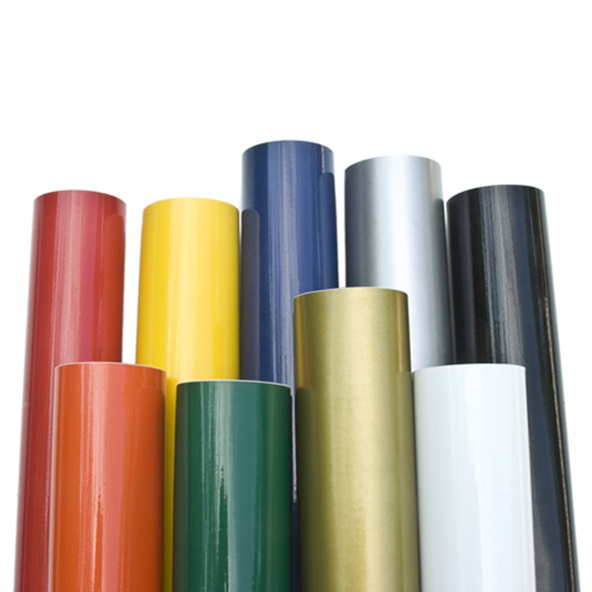
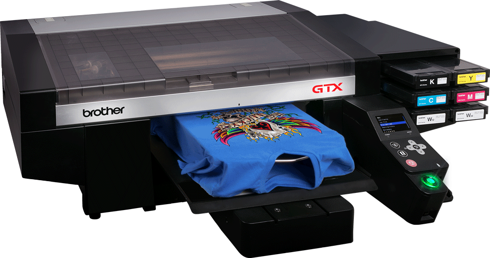
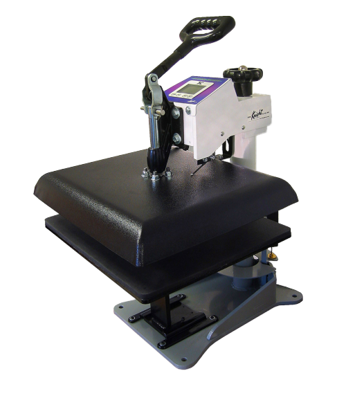
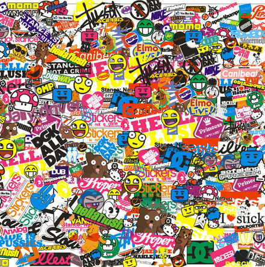
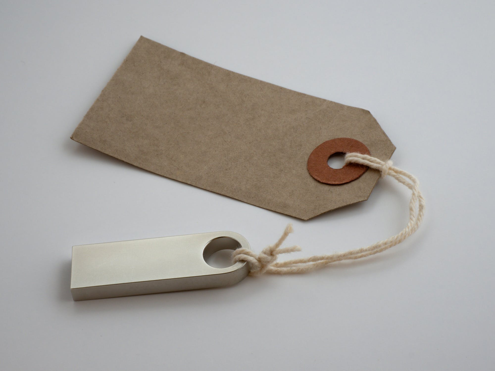
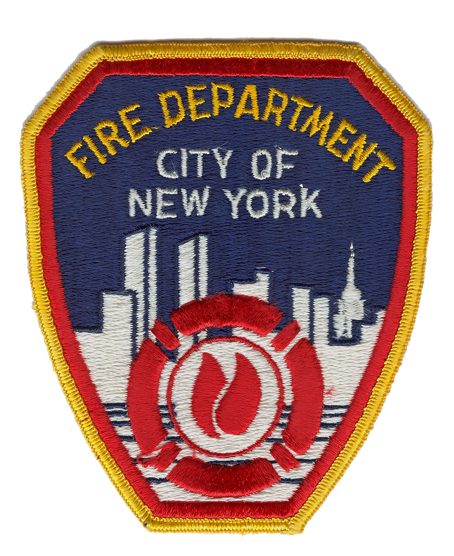

Vinyl printing is best for rush jobs, same day printing, as well as clients wanting an alternative look to the traditional ink style methods of DTG and screen printing. New techniques involving gold and iridescent foils, as well as the highly reflective 3M material, fall under this category of printing.
VINYL PRINTING
Vinyl printing on garments is an excellent alternative to traditional printing. This type of printing utilizes a computer and vinyl machine to cut your design into vinyl, and is then heat pressed onto the garment.Vinyl printing is best for rush jobs, same day printing, as well as clients wanting an alternative look to the traditional ink style methods of DTG and screen printing. New techniques involving gold and iridescent foils, as well as the highly reflective 3M material, fall under this category of printing.

SCREEN PRINTING
Screen printing is the most traditional and widely accepted as the best method for garment printing. Modern screen printing uses highly sophisticated automatic and manual presses to quickly print many shirts in a assembly-line process.A design is broken down into separate colors representing different screens, ink is applied, and physically pushed through the screen onto the garment. Screen printing is ideal for large production jobs.

This printing method is ideal for customers looking to print photographs, as well as other images that have many colors. DTG is an excellent alternative to screen printing, as you can print as few as a couple shirts without all of the costs!
DIRECT TO GARMENT PRINTING
Direct to Garment Printing also known as "DTG" is the most modern process for printing on garments. Here at BCCO we use a Kornit printer, which is revered as the best direct to garment printer on the market today.This printing method is ideal for customers looking to print photographs, as well as other images that have many colors. DTG is an excellent alternative to screen printing, as you can print as few as a couple shirts without all of the costs!

Whether you're looking for a quick bachelorette shirt, or a fashion photographic print, heat transfer is your solution in a time crunch.
HEAT TRANSFER PRINTING
Heat transfer printing is the most cost effective printing method on the market today. This style utilizes high quality fabric paper which is put into a high density inkjet printer and then cut out and heat pressed onto your garment.Whether you're looking for a quick bachelorette shirt, or a fashion photographic print, heat transfer is your solution in a time crunch.

EMBROIDERY
Embroidery is the art of thread onto garment. We offer numerous types of embroidery including 3D "puff" embroidery for baseball caps, normal embroidery, athletic "tackle twill", as well as patches of any size and design.Embroidery is one of the best ways to set your business apart with a simple statement of quality.
GRAPHIC DESIGN
Need artwork? Our graphic design team is highly experienced at turning your ideas into reality! Utilizing programs such as Adobe Photoshop, Illustrator, and InDesign, we are here to help you create quality artwork that you will make you stand out in today's fast paced society.We create business cards as well that are sure to set your brand apart from the competition. Rates are hourly, and once completed we send you files of the completed design for future use.

We only require a minimum of 50 stickers to begin an order! And remember, everyone loves a good sticker.
STICKER PRINTING
One of the best ways to promote yourself and brand is a clean cut sticker. We print high quality stickers offering gloss and matte finishes for all your sticker needs.We only require a minimum of 50 stickers to begin an order! And remember, everyone loves a good sticker.

This aspect of production is overlooked all too often, and can be the breaking point for a brand destined for success.
TAG SERVICES
At BCCO we understand that attention to detail is what can turn a prospective buyer into a loyal customer. We offer tagging services such as applying hang tags to your finished garments, as well as sewing pre-made woven tags into your shirts at any location you desire.This aspect of production is overlooked all too often, and can be the breaking point for a brand destined for success.

There is no minimum or maximum for patch orders, and we guarantee you will love our work.
CUSTOM PATCHWORK
Custom patches are one of the finest forms of embroidery. Patches are excellent for outerwear such as uniforms, button down jackets, hats, as well as many other garments.There is no minimum or maximum for patch orders, and we guarantee you will love our work.